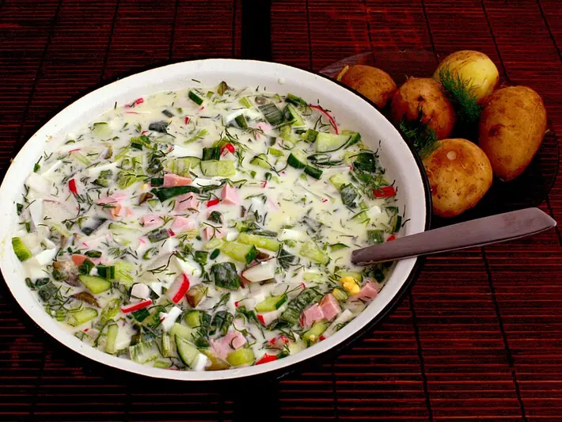

Фото: Nikkolo, CC BY-SA 3.0

Окрошка на кефире
Холодный летний суп на кефире с огурцами, редиской и яйцом
40 мин4 порц.309 ккал на порциюБ 17 · Ж 13 · У 29Русская кухня
Продукты на 4 порц.
- Картофель3 шт
- Яйцо куриное4 шт
- Огурцы2 шт
- Редис150 г
- Зелёный лук1 пучок
- Укроп1 пучок
- Кефир1 л
- Вода2 стак.
- Соль1 ч. л.
- Горчица по желанию1 ч. л.
- Лимон по желаниюпо вкусу
Как готовить
- Картофель отварите в мундире 20-25 минут до мягкости, остудите и очистите.
- Яйца отварите 10 минут после закипания, остудите в холодной воде и очистите.
- Нарежьте картофель, яйца, огурцы и редис мелкими кубиками.
- Мелко порубите зелёный лук и укроп, разотрите с солью ложкой, чтобы пустили сок.
- Смешайте кефир с холодной водой, горчицей и лимонным соком.
- Сложите нарезку и зелень в кастрюлю, залейте кефиром, перемешайте и уберите в холодильник на 30 минут.
Совет. Нарезку храните отдельно и заливайте кефиром перед подачей, так она простоит в холодильнике 2 дня. Для сытности добавьте отварную курицу, но тогда это уже не вегетарианское блюдо.